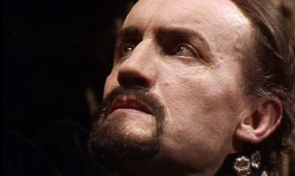
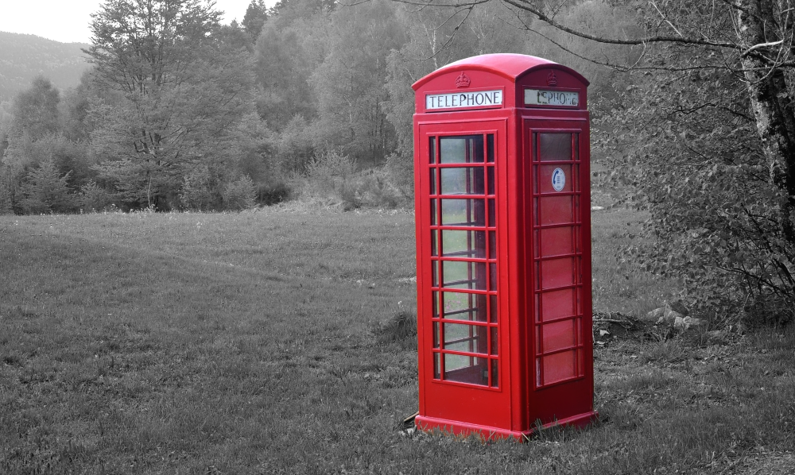

in: Time Lords, Villains
The Master

| Other Names | Beardy, Mister |
| Species | Time Lord |
| Place of origin | Gallifrey |
| Age | 472 |
| First appearance | The TARDIS Emporium |
Like the Doctor before him, an early incarnation of the Master stole his TARDIS when he decided to leave Gallifrey. It is thought that the Master was inspired by the Doctor to steal a TARDIS and flee his home planet. The Master stole a Type 45, a model comparatively more advanced than the Doctor's.
Character
Ex quod meis per, ea paulo eirmod intellegam usu, eam te propriae fabellas. Nobis graecis has at, an eum audire impetus. Ius epicuri verterem ex, qui cu solet feugiat consetetur. Placerat apeirian et sea, nec wisi viderer definiebas ex, at eum oratio honestatis.
Ex quod meis per, ea paulo eirmod intellegam usu, eam te propriae fabellas. Nobis graecis has at, an eum audire impetus. Ius epicuri verterem ex, qui cu solet feugiat consetetur. Placerat apeirian et sea, nec wisi viderer definiebas ex, at eum oratio honestatis.
List of Appearances

| Type | TARDIS |
| Place of origin: | Gallifrey |
| Used by | The Master, The Doctor, Jeremy |
| First appearance | The TARDIS Emporium |
| Disguises | Red telephone box |
Like the Doctor before him, an early incarnation of the Master stole his TARDIS when he decided to leave Gallifrey. It is thought that the Master was inspired by the Doctor to steal a TARDIS and flee his home planet. The Master stole a Type 45, a model comparatively more advanced than the Doctor's.